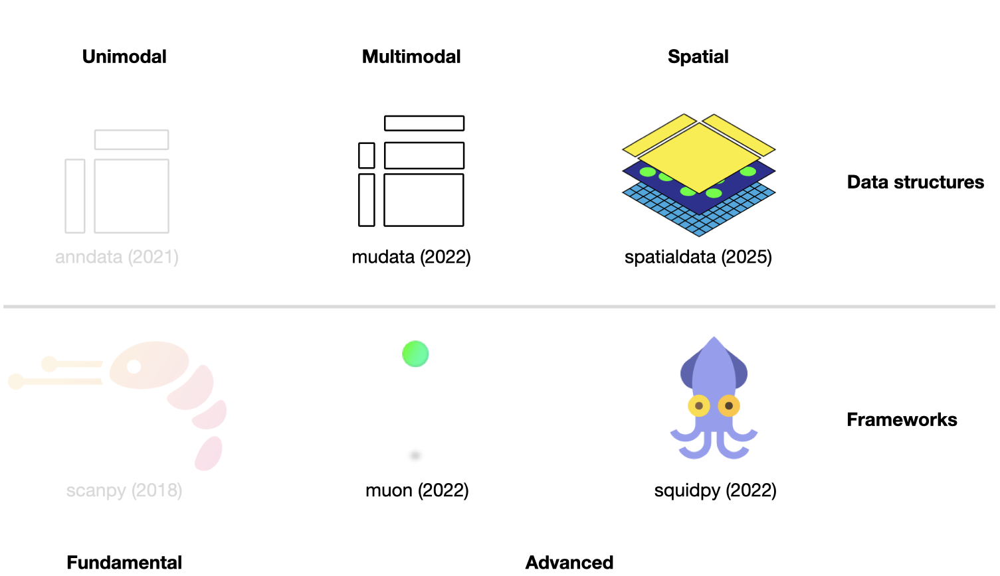
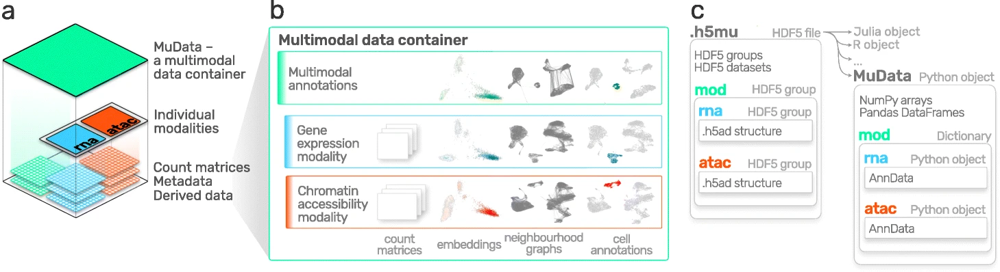
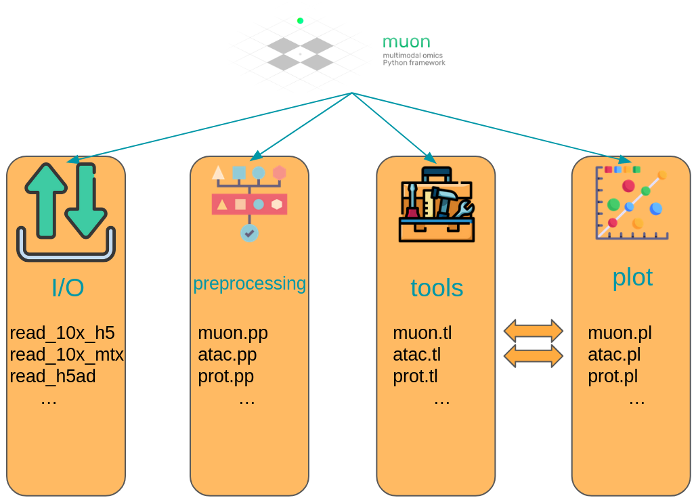
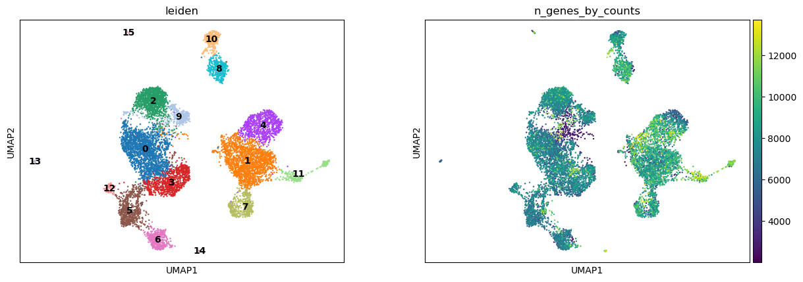
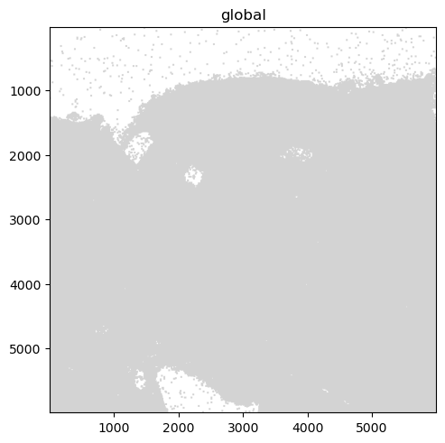
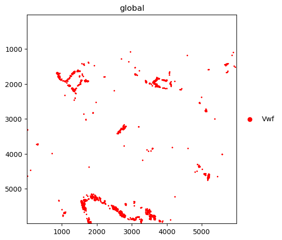
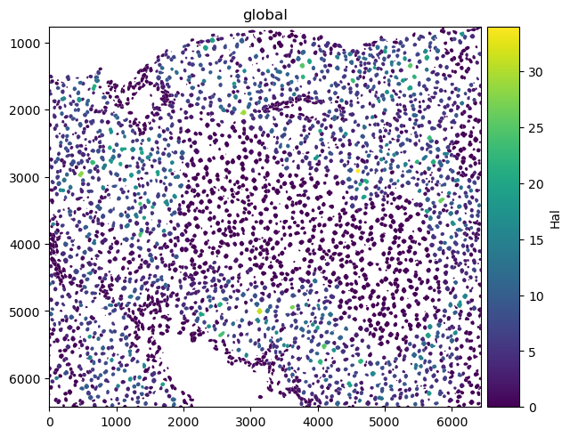

5. 多模态和空间数据结构#
关键要点
现代单细胞实验常常同时测量多种模态（例如 RNA、ATAC、蛋白质）。AnnData 是为单模态数据设计的，而多模态实验则需要诸如 MuData 这样能把多个数据集组织在一起的容器。
MuData 对象存储多个 AnnData 对象（每个模态一个），同时共享对细胞和特征的全局注释。这种结构允许在同一数据集内既进行特定模态的分析，也进行联合的多模态计算。
框架 muon 通过为 RNA 以外的模态（例如 ATAC 或蛋白质数据）提供预处理和分析工具，扩展了分析生态系统。它还包含跨多个模态整合信息的方法。
空间组学技术在测量分子数据的同时，保留了组织内的空间背景。数据结构 SpatialData 将图像、坐标、几何形状和分子测量统一存储在一个数据结构中。
Squidpy 将分子谱与空间背景相结合，为分析和可视化都提供了工具。它构建在 Scanpy 和 AnnData 之上，保留了模块化和可扩展性。
环境设置
安装 conda:
在创建环境之前，请确保 conda 已安装在您的系统中。
保存 yml 内容:
将 yml 选项卡中的内容复制到名为
environment.yml的文件中。
创建环境:
打开终端或命令提示符。
运行以下命令：
conda env create -f environment.yml
激活环境:
创建好环境后，使用以下命令激活它：
conda activate <environment_name>
替换
<environment_name>，名称就是在environment.yml文件中指定的那个。在 yml 文件里，它看起来像这样：name: <environment_name>
验证安装:
通过运行以下命令，检查环境是否创建成功：
conda env list
name: advanced_data_structures_and_frameworks
channels:
- conda-forge
- bioconda
dependencies:
- conda-forge::imagecodecs<2026,>=2025.8.2
- conda-forge::muon=0.1.7
- conda-forge::python=3.12.12
- conda-forge::squidpy=1.8.1
- conda-forge::scanpy=1.12
- conda-forge::leidenalg=0.11.0
- conda-forge::python-igraph=1.0.0
- pip
- pip:
- lamindb
- pysam==0.23.3
获取数据和笔记本
本书使用 lamindb，并通过 theislab/sc-best-practices 实例 来存储、共享和加载数据集与笔记本。感谢 Lamin Labs 提供免费托管服务。
安装 lamindb
安装 lamindb Python 软件包：
pip install lamindb
可选择创建 lamin 账户
按照以下 说明 注册并登录。
验证你的设置
运行
lamin connect命令：
import lamindb as ln ln.Artifact.connect("theislab/sc-best-practices").df()
你现在应该看到最多100个存储的数据集。
访问数据集（Artifact）
在 Artifacts 页面 搜索该数据集。
加载一个 Artifact 及其对应的对象：
import lamindb as ln af = ln.Artifact.connect("theislab/sc-best-practices").get(key="key_of_dataset", is_latest=True) obj = af.load()
该对象现在已可在内存中访问，并可用于分析。请调整
ln.Artifact.connect("theislab/sc-best-practices").get("SOMEIDXXXX")后缀以获取相应的版本。访问笔记本（Transform）
在 Transforms 页面 搜索该笔记本。
加载笔记本：
lamin load <notebook url>
这会把笔记本下载到当前工作目录。与
Artifacts类似，你可以调整后缀 ID 来获取旧版本。
{kind=link}

图5.1 scverse 生态系统概览，突出显示本章涉及的库。括号内标注了各库被科学期刊发表的日期。各库的图标取自相应的 GitHub 页面 [Bredikhin et al., 2022, Marconato et al., 2025, Palla et al., 2022, Virshup et al., 2021, Wolf et al., 2018].#
本章假定读者已经熟悉 AnnData 和 scanpy（参见 前一个章节）。它进一步引入两种数据结构——用于多模态实验的 MuData 和用于空间分辨数据的 SpatialData——以及构建在各自之上的分析框架。
5.1. 使用 MuData 存储多模态数据#
AnnData 主要用于存储和操作单模态数据。然而，CITE-Seq 等多模态实验会通过同时测量 RNA 和表面蛋白来产生多模态数据。这类数据需要更高级的存储方式，而这正是 MuData 发挥作用的地方。MuData 构建在 AnnData 之上，用于存储和操作多模态数据。Muon [Bredikhin et al., 2022]，作为“scanpy 的对应物”和 scverse 的核心包，随后可用于分析多模态组学数据。下一节的内容基于 MuData 快速启动 和 多模态数据对象 教程。
{kind=link}

图5.2 MuData 概览。图片取自 [Bredikhin et al., 2022].#
5.1.1. 安装#
MuData可在PyPI和Conda上获取。它可以使用以下任一命令安装。
pip install mudata
conda install -c conda-forge mudata
MuData 背后的主要思想是：MuData 对象包含对各单模态数据所对应的单个 AnnData 对象的引用，但 MuData 对象本身也存储多模态注释。因此，既可以直接访问这些 AnnData 对象，对单模态数据做变换并把结果存进相应的 AnnData 注释中；也可以把各模态聚合起来做联合计算，并把结果存进全局的 MuData 对象。从技术上讲，这是通过 MuData 对象实现的：它在其 .mod （=modality，模态）属性中包含一个由 AnnData 对象组成的字典，每个模态对应一个。与 AnnData 对象本身一样，MuData 对象也包含诸如 .obs 等属性（用于存放对观测（样本或细胞）的注释），以及诸如 .obsm 等属性（用于存放嵌入等多维注释）。
5.1.2. 初始化 MuData 对象#
让我们从 mudata 包中导入 MuData。
import lamindb as ln
import mudata as md
import numpy as np
ln.track()
要创建一个示例 MuData 对象，我们需要模拟数据。因此，我们创建了两个 AnnData 对象，它们包含 针对相同观测的数据，但针对 不同的变量.
adata = ln.Artifact.get(
key="introduction/advanced_data_structures_and_frameworks_mudata_1.h5ad",
).load()
adata
AnnData object with n_obs × n_vars = 1000 × 100
adata2 = ln.Artifact.get(
key="introduction/advanced_data_structures_and_frameworks_mudata_2.h5ad",
).load()
adata2
AnnData object with n_obs × n_vars = 1000 × 50
随后，可以把这两个 AnnData 对象（两个“模态”）封装进一个 MuData 对象中。这里，我们将第一个模态命名为 A 和第二个模态 B.
mdata = md.MuData({"A": adata, "B": adata2})
mdata
MuData object with n_obs × n_vars = 1000 × 150
2 modalities
A: 1000 x 100
B: 1000 x 50对于 MuData 对象，其观测和变量都是全局的，这意味着同名的观测（.obs_names）在不同模态中被视为同一个观测（例如 obs_1 in adata 和 obs_1 in adata2）。这也意味着变量名（.var_names）应当是唯一的（例如var_1 in adata 和 var2_1 in adata2）。这反映在上述对象描述中： mdata 有1000个观测和150=100+50个变量。
5.1.3. MuData 属性#
5.1.3.1. .mod#
MuData 对象由前面描述的 AnnData 对象的注释组成，例如 .obs 或 .var，但将此行为扩展到 .mod，它用作访问各个模态的访问器。各模态存储在一个集合中，可通过 MuData 对象的 .mod 属性来访问，其中以模态名称为键、AnnData 对象为值。
list(mdata.mod.keys())
['A', 'B']
可以通过各模态的名称，借助 .mod 属性来访问单个模态，也可以直接通过 MuData 对象本身作为简写来访问。
print(mdata.mod["A"])
print(mdata["A"])
AnnData object with n_obs × n_vars = 1000 × 100
AnnData object with n_obs × n_vars = 1000 × 100
5.1.3.2. .obs 和 .var#
样本(细胞)注释可通过 .obs 属性进行访问，默认情况下包括来自 .obs 各个模态的数据框中复制的列。同样的情况也适用于 .var，其中包含变量（特征）的注释。从单个模态复制来的观测列会以模态名作为前缀，例如 rna:n_genes；变量列也是如此。但是，如果在 .var 多个模态的该属性中存在同名的列（例如 n_cells），这些列会跨模态合并，且不添加前缀。当这些槽位在各模态的 AnnData 对象中发生更改时（例如新增列或筛除样本（细胞）），这些更改必须通过 .update() 方法(见下文)。
mdata.var_names
Index(['var_1', 'var_2', 'var_3', 'var_4', 'var_5', 'var_6', 'var_7', 'var_8',
'var_9', 'var_10',
...
'var2_41', 'var2_42', 'var2_43', 'var2_44', 'var2_45', 'var2_46',
'var2_47', 'var2_48', 'var2_49', 'var2_50'],
dtype='object', length=150)
样本（细胞）的多维注释可在 .obsm 属性中访问。例如，它可以是在所有模态上联合学习得到的 UMAP 坐标。
如果模态的形状发生变化(例如改变 var_names), MuData.update() 必须运行才能将相应的更新带入 MuData 对象。
adata2.var_names = ["var_ad2_" + e.split("_")[1] for e in adata2.var_names]
print("Outdated variables names: ...,", ", ".join(mdata.var_names[-3:]))
mdata.update()
print("Updated variables names: ...,", ", ".join(mdata.var_names[-3:]))
Outdated variables names: ..., var2_48, var2_49, var2_50
Updated variables names: ..., var_ad2_48, var_ad2_49, var_ad2_50
重要的是，各个模态是作为对原始对象的引用来存储的。因此，如果原始 AnnData 被更改，更改也会反映到 MuData 对象中。
# Add some unstructured data to the original object
adata.uns["misc"] = {"adata": True}
# Access modality A via the .mod attribute
mdata.mod["A"].uns["misc"]
{'adata': True}
5.1.4. 变量映射#
在构建 MuData 对象时，会在观测与各个模态之间、以及变量与各个模态之间创建一个全局的二值映射。由于在 mdata中，各模态的所有观测都相同，因此观测映射中的所有值都被设为 True.
mdata.obsm["A"]
np.sum(mdata.obsm["A"]) == np.sum(mdata.obsm["B"]) == 1000
np.True_
然而，对于变量来说，它们是长度为 150 的向量。其中 A 模态有 100 个 True 值，随后是 50 个 False 数值。
mdata.varm["A"]
5.1.5. MuData 视图#
与 AnnData 对象的行为类似，对 MuData 对象切片会返回原始数据的视图。
view = mdata[:100, :1000]
print(view.is_view)
print(view["A"].is_view)
True
True
对 MuData 对象进行子集化很特殊，因为它会跨各个模态进行切片。例如，对一组 obs_names and/or var_names 进行的切片操作会在每个模态上执行，而不仅仅作用于全局的多模态注释。这种行为使工作流程很省内存，在处理大型数据集时尤为重要。不过，如果要修改该对象，就应当为它创建一个副本——副本不再是视图，也不再依赖于原始对象。
mdata_sub = view.copy()
mdata_sub.is_view
False
5.1.6. 共同的观测#
虽然 MuData 对象在两种模态上由相同的观测组成，但在现实世界中并非总是如此，有些数据可能缺失。在设计上，MuData 已考虑到这些情形，因为对于一个 MuData 实例而言，并不能保证各模态的观测相同（甚至相交）。值得注意的是，其他工具可能为处理缺失数据的某些常见情形提供便捷函数，例如 intersect_obs()，它在 muon 中实现。
5.1.7. MuData 对象的读写#
与 AnnData 对象类似，MuData 对象被设计为可序列化为基于 HDF5 的 .h5mu 文件。所有模态都以各自的名称存储在 /mod HDF5 组中（该组位于 .h5mu 文件中）。每一个单独的模态，例如 /mod/A，其存储方式与它单独存储于 .h5ad 文件中时相同。MuData 对象可读写如下：
mdata.write("my_mudata.h5mu")
mdata_r = md.read("my_mudata.h5mu", backed=True)
mdata_r
MuData object with n_obs × n_vars = 1000 × 150 backed at 'my_mudata.h5mu'
2 modalities
A: 1000 x 100
uns: 'misc'
B: 1000 x 50各个模态同样以 backed 模式存储在 .h5mu 文件。
mdata_r["A"].isbacked
True
如果原始对象处于 backed 模式，请为 .copy() 调用提供一个新文件名，这样得到的对象就会在新位置以 backed 模式存储。
mdata_sub = mdata_r.copy("mdata_sub.h5mu")
print(mdata_sub.is_view)
print(mdata_sub.isbacked)
False
True
5.1.8. 多模态方法#
当 MuData 对象准备就绪后，就要靠多模态方法来从数据中提取意义。最简单、最朴素的方法，是把来自多个模态的矩阵拼接起来，例如用于降维。
x = np.hstack([mdata.mod["A"].X, mdata.mod["B"].X])
x.shape
(1000, 150)
我们可以编写一个简单的函数，对这样一个拼接后的矩阵运行 主成分分析（PCA） 。MuData 对象提供了一处用于存储多模态 嵌入: MuData .obsm。这类似于在各个单独模态上生成的嵌入的存储方式，只不过这次它保存在 MuData 对象内部，而不是 AnnData 的 .obsm.
例如，为计算各模态联合值的 PCA，我们把存储在各个单独模态中的值横向堆叠起来，然后在堆叠后的矩阵上执行 PCA。之所以可行，是因为各模态的观测数相互匹配（记住，每个模态的特征数不必匹配）。
def simple_pca(mdata):
from sklearn import decomposition
x = np.hstack([m.X for m in mdata.mod.values()])
pca = decomposition.PCA(n_components=2)
components = pca.fit_transform(x)
# By default, methods operate in-place and embeddings are stored in the .obsm slot
mdata.obsm["X_pca"] = components
simple_pca(mdata)
print(mdata)
MuData object with n_obs × n_vars = 1000 × 150
obsm: 'X_pca'
2 modalities
A: 1000 x 100
uns: 'misc'
B: 1000 x 50
我们计算得到的主成分现在存储在 MuData 对象本身之中，可供进一步的多模态变换使用。
然而在现实中，拥有不同模态往往意味着它们之间的特征来自不同的生成过程，因而不可直接比较。这正是专门的多模态整合方法发挥作用的地方。对于组学技术，这些方法通常被称为多组学整合方法。在下一节中，我们将介绍 muon，它提供了许多工具，用于预处理 RNA-Seq 之外的单模态数据，以及进行多组学整合。
5.2. 使用 muon 进行多模态数据分析#
虽然 Scanpy 提供了 PCA、UMAP 以及各种可视化等通用工具，但它主要是为分析 RNA-Seq 数据而设计的。muon 填补了这一空白，为其他组学（例如染色质可及性（ATAC）或蛋白质（CITE）数据）提供预处理功能。如前所述，muon 还提供算法来运行从联合模态中推断知识的多组学算法。例如，用户可以在单个模态上运行 PCA，而 muon 进一步提供了以多个模态作为输入的多组学因子分析算法。以下各节改编自 muon 教程 “处理 10k 个 PBMC 的染色质可及性”.

图5.3 muon 概览。图片取自 [Bredikhin et al., 2022].#
5.2.1. 安装#
Muon在PyPI上可用，可以使用:
pip install muon
5.2.2. API 概览#
为介绍 muon，我们将查看一个多模态数据集中的 ATAC 数据。与 Scanpy 那一章类似，本章仅作为 muon 的快速演示和概览，并不会彻底分析某个数据集，更谈不上提供最佳实践的多组学分析。请阅读相应章节，以了解如何恰当地开展此类分析。
muon 以两种方式划分其模块。首先，与 Scanpy 类似，通用函数和多模态函数被归入预处理（muon.pp），工具（muon.tl）和绘图（muon.pl）。第二，从相应的 muon 中可以找到单模态工具，这些工具又被分离成预处理、工具和绘图。例如，所有 ATAC 预处理功能都归为 muon.atac.pp。这也适用于 CITE-Seq 预处理功能（muon.prot.pp).
{kind=link}

图5.4 Muon API 概览。模态特有的函数在相应命名的模块中提供。用于各模态联合分析的函数则直接通过 muon 模块提供。#
5.2.3. Muon API 演示#
用于本次演示的数据集，是一份可公开获取的 10x Genomics Multiome 数据集，对象为人类外周血单个核细胞（PBMC）。
import muon as mu
mdata = ln.Artifact.get(
key="introduction/advanced_data_structures_and_frameworks_muon.h5mu", is_latest=True
).load()
fragments = ln.Artifact.get(
key="introduction/advanced_data_structures_and_frameworks_atac_fragments.tsv.gz",
is_latest=True,
).cache()
fragments_tbi = ln.Artifact.get(
key="introduction/advanced_data_structures_and_frameworks_atac_fragments.tsv.gz.tbi",
is_latest=True,
).cache()
mdata
MuData object with n_obs × n_vars = 11909 × 144978
var: 'gene_ids', 'feature_types', 'genome', 'interval'
2 modalities
rna: 11909 x 36601
var: 'gene_ids', 'feature_types', 'genome', 'interval'
atac: 11909 x 108377
var: 'gene_ids', 'feature_types', 'genome', 'interval'
uns: 'atac', 'files'作为第一步，我们将数据子集化到 ATAC 模态。
atac = mdata.mod["atac"]
尽管我们现在处理的不是 RNA-Seq，但仍然可以使用 Scanpy 的一些预处理函数，它们同样适用于 ATAC 数据。这之所以可行，是因为两种模态的分布和质量问题相似。这里唯一需要记住的是：在带有 ATAC-seq 数据的 AnnData 对象语境下，“一个基因”指的是“一个峰（peak）”。之后，可以用 muon 的 ATAC 模块进行 ATAC 特有的预处理。
让我们先做一些质量控制：过滤掉峰过少的细胞，以及只在过少细胞中被检测到的峰。目前，我们会先滤除未通过 QC 的细胞。
import scanpy as sc
sc.pp.calculate_qc_metrics(atac, percent_top=None, log1p=False, inplace=True)
sc.pl.violin(atac, ["total_counts", "n_genes_by_counts"], jitter=0.4, multi_panel=True)

过滤掉未检测到表达的峰。
mu.pp.filter_var(atac, "n_cells_by_counts", lambda x: x >= 10)
# This is analogous to
# sc.pp.filter_genes(rna, min_cells=10)
# but does in-place filtering and avoids copying the object
我们还过滤细胞。
mu.pp.filter_obs(atac, "n_genes_by_counts", lambda x: (x >= 2000) & (x <= 15000))
# This is analogous to
# sc.pp.filter_cells(atac, max_genes=15000)
# sc.pp.filter_cells(atac, min_genes=2000)
# but does in-place filtering avoiding copying the object
mu.pp.filter_obs(atac, "total_counts", lambda x: (x >= 4000) & (x <= 40000))
sc.pl.violin(atac, ["n_genes_by_counts", "total_counts"], jitter=0.4, multi_panel=True)

muon 还提供了直方图，让我们能从不同角度查看这些指标。
mu.pl.histogram(atac, ["n_genes_by_counts", "total_counts"])

现在，我们已初步过滤掉了峰过少的细胞，以及只在过少细胞中被检测到的峰，接下来可以用 muon 开始进行 ATAC 特有的质量控制。muon 在相应模块中提供模态特有的预处理函数。我们导入 ATAC 模块，以使用 ATAC 特有的预处理函数。
from muon import atac as ac
# Perform rudimentary quality control with muon's ATAC module
atac.obs["NS"] = 1
ac.tl.locate_fragments(mdata, fragments=str(fragments))
ac.tl.locate_fragments(atac, fragments=str(fragments))
ac.tl.nucleosome_signal(atac, n=1e6)
ac.tl.get_gene_annotation_from_rna(mdata["rna"]).head(3)
tss = ac.tl.tss_enrichment(mdata, n_tss=1000)
ac.pl.tss_enrichment(tss)
Reading Fragments: 100%|██████████| 1000000/1000000 [00:03<00:00, 319214.51it/s]
Fetching Regions...: 100%|██████████| 1000/1000 [00:09<00:00, 106.91it/s]

# Save original counts, normalize data and select highly variable genes with scanpy
atac.layers["counts"] = atac.X
sc.pp.normalize_per_cell(atac, counts_per_cell_after=1e4)
sc.pp.log1p(atac)
sc.pp.highly_variable_genes(atac, min_mean=0.05, max_mean=1.5, min_disp=0.5)
atac.raw = atac
虽然 PCA 也常用于 ATAC 数据，但潜在语义索引（LSI）是另一种流行的选择。它在 muon 的 ATAC 模块中实现。
ac.tl.lsi(atac)
sc.pp.neighbors(atac, use_rep="X_lsi", n_neighbors=10, n_pcs=30)
sc.tl.leiden(atac, resolution=0.5)
sc.tl.umap(atac, spread=1.5, min_dist=0.5, random_state=20)
sc.pl.umap(atac, color=["leiden", "n_genes_by_counts"], legend_loc="on data")

我们可以利用 muon 中 ATAC 模块的功能，根据对应某个基因的峰中的 cut 值来给图着色。
ac.pl.umap(atac, color=["KLF4"], average="peak_type")

如需了解 muon 所有可用函数的更多信息，请阅读 muon API 参考 和 muon 教程.
5.3. 使用 SpatialData 存储多模态与空间数据#
空间组学是指在保留分子信息（基因表达、染色质可及性、蛋白质）在组织内物理位置的同时对其进行测量的一类技术。传统的单细胞方法在组织解离过程中会丢失空间背景，而空间组学则同时保留单细胞的分子谱和空间位置。由于这类数据集结合了图像、坐标和多种分子测量，因而体量庞大、结构复杂，需要专门的、具备空间感知能力的数据结构。SpatialData 统一了来自多种空间组学技术的原始数据和处理后数据 [Marconato et al., 2025]。它的五种基本元素（SpatialElement）按照 OME–NGFF 标准（一种用于生物成像数据的标准化格式）保存在 Zarr 存储中。
5.3.1. 安装和导入#
同样，使用 PyPI 或 Conda 来安装 SpatialData。
pip install spatialdata
conda install -c conda-forge spatialdata
5.3.2. 关键术语和数据模型#
我们可以把 SpatialData 对象看作各种 Elements的容器。Element 要么是一个 SpatialElement (Images, Labels, Points, Shapes）或 Table。下面是简要说明：
Images：H&E 染色图像Labels: pixel-level segmentationPoints：带有基因信息的转录本位置、地标点Shapes:细胞/核边界，亚细胞结构，解剖学注释，感兴趣的区域(ROI)Tables: 稀疏/密集矩阵，注解SpatialElements或存储任意(非空间)元数据。它们不包含空间坐标。
我们可以把 SpatialElements 分为两大类：
Rasters: 由像素组成的数据:包括Images和LabelsVectors:数据由点和线组成。多边形也是矢量，因为它们只是连接点的列表。Points和Shapes是此类元素。

图5.5 SpatialData 对象的各个元素。取自。#
import spatialdata as sd
import spatialdata_plot # noqa: F401
让我们使用 lamindb加载一个小鼠肝脏数据集。原始数据集见 此处.
sdata = ln.Artifact.get(
key="introduction/advanced_data_structures_and_frameworks_spatialdata.zarr"
).load()
sdata
SpatialData object, with associated Zarr store: /Users/luisheinzlmeier/Library/Caches/lamindb/lamin-eu-central-1/VPwcjx3CDAa2/introduction/advanced_data_structures_and_frameworks_spatialdata.zarr
├── Images
│ └── 'raw_image': DataTree[cyx] (1, 6432, 6432), (1, 1608, 1608)
├── Labels
│ └── 'segmentation_mask': DataArray[yx] (6432, 6432)
├── Points
│ └── 'transcripts': DataFrame with shape: (<Delayed>, 3) (2D points)
├── Shapes
│ └── 'nucleus_boundaries': GeoDataFrame shape: (3375, 1) (2D shapes)
└── Tables
└── 'table': AnnData (3375, 99)
with coordinate systems:
▸ 'global', with elements:
raw_image (Images), segmentation_mask (Labels), transcripts (Points), nucleus_boundaries (Shapes)
5.3.3. 探索 Elements 的 SpatialData 对象#
让我们逐一探索每种元素类型及其表示方式：
图像 :
xarray.DataArray或xarray.DataTree分别用于单尺度或多尺度图像的对象标签 :
xarray.DataArray或xarray.DataTree含有不同标签的整数代码的对象点 :
dask.DataFrame对象，包含点坐标（是pandas.DataFrame对象的惰性版本）形状 :
geopandas.GeoDataFrame包含多边形等几何对象的对象表格：
anndata.AnnData对象，用于带注释的表格数据
sdata["raw_image"]
图像可以有多个尺度，这些尺度以降采样表示的形式存储在金字塔中，有助于更高效地可视化和分析。我们可以使用 get_pyramid_levels 函数来访问单个尺度，其中 0 是最高分辨率， 1 按某个系数（通常为 2）进行降采样， 2 再按另一个系数（通常为 2，相对于上一个尺度）进行降采样，依此类推。
在本例中，我们的图像有 2 个尺度（请查看上方代码单元输出中的 groups，参见 上文）。让我们访问最高分辨率的图像。
sd.get_pyramid_levels(sdata["raw_image"], n=1)
要查看坐标轴和通道名称等图像属性， SpatialData 提供了一些辅助函数。更多辅助函数可在 API 页面中找到。坐标轴 x 和 y 代表图像的二维平面，而 c 对应图像内的不同通道（例如波长）。
sd.models.get_axes_names(sdata["raw_image"])
('c', 'y', 'x')
这里我们看到，我们的图像只有一个用于 DAPI 染色的通道（用于突出显示细胞核）。
sd.models.get_channel_names(sdata["raw_image"])
[0]
让我们使用 spatialdata-plot 以显示图像（用于细胞核的 DAPI 染色）。
sdata.pl.render_images("raw_image", cmap="gray").pl.show()

5.3.4. 点#
点表示为 dask.DataFrame 含有点坐标的对象(惰性版本) pandas.DataFrame 对象）。惰性加载 DataFrame 减少内存使用，因为信息只有在需要时才会从数据文件中检索，而不是一次全部检索。对于测量单分子的空间转录组数据集，坐标储存在列中 x 和 y (可选) z 用于3D),并具有额外的列注释基因身份。
sdata["transcripts"]
| x | y | gene | |
|---|---|---|---|
| npartitions=1 | |||
| float64 | float64 | category[unknown] | |
| ... | ... | ... |
我们可以轻松地将 dask.DataFrame 转换为一个 pandas.DataFrame 使用 .compute()，这样会更便于处理。注意，这会把整个对象都载入内存。如果数据很大，你可以直接使用 dask 用于操纵数据帧的API.
sdata["transcripts"].compute()
| x | y | gene | |
|---|---|---|---|
| 0 | 433.0 | 1217.0 | Adgre1 |
| 1 | 151.0 | 1841.0 | Adgre1 |
| 2 | 139.0 | 1983.0 | Adgre1 |
| 3 | 1349.0 | 1601.0 | Adgre1 |
| 4 | 784.0 | 1732.0 | Adgre1 |
| ... | ... | ... | ... |
| 1998863 | 5743.0 | 5233.0 | Lyve1 |
| 1998864 | 5721.0 | 4581.0 | Lyve1 |
| 1998865 | 5807.0 | 4842.0 | Lyve1 |
| 1998866 | 5843.0 | 5309.0 | Lyve1 |
| 1998869 | 5580.0 | 5226.0 | Lyve1 |
1153548 rows × 3 columns
在可视化各点时，注意绘图后端自动切换 matplotlib to datashader。这确保了在点数很大时仍能高效渲染。如下所示，绘制转录本的子集（例如特定基因）会更有用。
我们进一步绘制按基因着色的转录本。其中的 groups 参数可用于绘制基因子集的转录本。
sdata.pl.render_points("transcripts").pl.show()
sdata.pl.render_points(
"transcripts", color="gene", groups="Vwf", palette="red", table_name="table"
).pl.show()
INFO Using 'datashader' backend with 'None' as reduction method to speed up plotting. Depending on the
reduction method, the value range of the plot might change. Set method to 'matplotlib' do disable this
behaviour.
WARNING No table name provided, using 'table' as fallback for color mapping.


5.3.5. 形状#
形状为 geopandas.GeoDataFrame，即包含多边形等几何对象的对象。关于如何使用 geopandas.GeoDataFrame 对象，请参考 geopandas 文档.
sdata["nucleus_boundaries"]
| geometry | |
|---|---|
| cell_ID | |
| 99 | POLYGON ((6277 798, 6277 799, 6272 799, 6272 8... |
| 142 | POLYGON ((6427 6123, 6423 6123, 6423 6124, 641... |
| 208 | POLYGON ((3747 858, 3747 859, 3746 859, 3746 8... |
| 235 | POLYGON ((752 6144, 752 6145, 763 6145, 763 61... |
| 336 | POLYGON ((5174 935, 5174 936, 5172 936, 5172 9... |
| ... | ... |
| 7652 | POLYGON ((1094 6028, 1094 6029, 1091 6029, 109... |
| 7680 | POLYGON ((1324 6063, 1324 6064, 1320 6064, 132... |
| 7694 | POLYGON ((1692 6063, 1692 6064, 1686 6064, 168... |
| 7708 | POLYGON ((768 6072, 768 6073, 765 6073, 765 60... |
| 7723 | POLYGON ((374 6074, 374 6076, 373 6076, 373 60... |
3375 rows × 1 columns
sdata.pl.render_shapes("nucleus_boundaries").pl.show()
INFO Converted 1 Polygon(s) with holes to MultiPolygon(s) for correct rendering.

5.3.6. 表格#
带注释的矩阵表示为 anndata.AnnData 对象。被导入（ingested）的数据集通常会在 sdata['table'] 处放置一个用于计数/丰度矩阵的表格。这样便可使用 Scanpy、scVI 等工具进行下游分析。
就不同的空间技术而言，这可以量化:
转录本:转录本计数;
空间蛋白质组学:标记丰度;
基于玻片的检测：点/网格丰度参见空间章节).
sdata["table"]
下面是一个示例：在细胞上绘制数值信息（HAL 基因表达），以及绘制分类信息（细胞类型）的示例。
sdata.pl.render_shapes("nucleus_boundaries", color="Hal").pl.show()
sdata.pl.render_shapes("nucleus_boundaries", color="annotation").pl.show()
INFO Converted 1 Polygon(s) with holes to MultiPolygon(s) for correct rendering.
INFO Successfully extracted 10 colors from 'annotation_colors' in table 'table'.
INFO Converted 1 Polygon(s) with holes to MultiPolygon(s) for correct rendering.


5.4. 使用 Squidpy 进行空间组学数据分析#
Squidpy 是一个用于分析和可视化空间组学数据的框架。它的发表大约比 SpatialData 早两年 [Marconato et al., 2025, Palla et al., 2022]。这也是为什么 Squidpy 最初构建在 Scanpy 和 AnnData 之上。由于 scverse 生态系统将逐步让 Squidpy 在内部改用 SpatialData，因此这里只简要介绍 Squidpy 如何使用空间数据。更多后续变化和教程，请查阅以下文档： SpatialData 和 Squidpy.
5.4.1. API 概览#
Squidpy 的 API 允许您分析和可视化空间分子数据。图（gr）处理空间关系和相互作用，图像（im）负责处理并分割组织图像，工具（tl）提供空间分析，绘图（pl）可视化数据和结果。读取（read）和数据集（datasets）支持跨各种技术导入数据和示例数据集。
5.4.2. 安装和导入软件包#
Squidpy可以在PyPI和Conda上找到。它可以使用以下任一命令安装。
pip install squidpy
conda install -c conda-forge squidpy
5.4.3. 空间数据整合#
让我们从导入 Squidpy 开始。
import squidpy as sq
我们可以加载一个 Xenium 数据集，使用 lamindb.
sdata = ln.Artifact.get(
key="introduction/advanced_data_structures_and_frameworks_squidpy.zarr"
).load()
sdata
SpatialData object, with associated Zarr store: /Users/luisheinzlmeier/Library/Caches/lamindb/lamin-eu-central-1/VPwcjx3CDAa2/introduction/advanced_data_structures_and_frameworks_squidpy.zarr
├── Images
│ ├── 'morphology_focus': DataTree[cyx] (1, 25778, 35416), (1, 12889, 17708), (1, 6444, 8854), (1, 3222, 4427), (1, 1611, 2213)
│ └── 'morphology_mip': DataTree[cyx] (1, 25778, 35416), (1, 12889, 17708), (1, 6444, 8854), (1, 3222, 4427), (1, 1611, 2213)
├── Points
│ └── 'transcripts': DataFrame with shape: (<Delayed>, 8) (3D points)
├── Shapes
│ ├── 'cell_boundaries': GeoDataFrame shape: (167780, 1) (2D shapes)
│ └── 'cell_circles': GeoDataFrame shape: (167780, 2) (2D shapes)
└── Tables
└── 'table': AnnData (167780, 313)
with coordinate systems:
▸ 'global', with elements:
morphology_focus (Images), morphology_mip (Images), transcripts (Points), cell_boundaries (Shapes), cell_circles (Shapes)
5.4.4. Squidpy 演示#
让我们计算 Xenium 数据集空间坐标的最近邻图（nearest neighbor graph）。
sq.gr.spatial_neighbors(sdata["table"])
之后，我们可以根据基因表达谱对细胞进行聚类，并计算聚类结果。
%%time
sc.pp.pca(sdata["table"])
sc.pp.neighbors(sdata["table"])
sc.tl.leiden(sdata["table"])
CPU times: user 2min 6s, sys: 3.94 s, total: 2min 10s
Wall time: 2min 10s
然后在 Squidpy 中运行邻域富集分析（neighbor enrichment analysis）。
sq.gr.nhood_enrichment(sdata["table"], cluster_key="leiden")
sq.pl.nhood_enrichment(sdata["table"], cluster_key="leiden", figsize=(5, 5))
100%|██████████| 1000/1000 [00:44<00:00, 22.28/s]

最后，我们既可以用 Squidpy，也可以用 SpatialData 中新的绘图函数，在空间坐标中将结果可视化。
%%time
sq.pl.spatial_scatter(sdata["table"], shape=None, color="leiden")
WARNING: Please specify a valid `library_id` or set it permanently in `adata.uns['spatial']`
CPU times: user 112 ms, sys: 6.02 ms, total: 118 ms
Wall time: 117 ms

5.5. 问题#
5.5.1. 翻转卡#
5.5.2. 多重选择问题#
在 MuData 对象 `mdata` 中，你会如何访问 RNA 数据？
在 SpatialData 对象中，表（AnnData 对象）的 X/Y 坐标存储在哪里？
SpatialData 与 AnnData 的不同之处在于它：
5.6. 参考文献#
Danila Bredikhin, Ilia Kats, and Oliver Stegle. Muon: multimodal omics analysis framework. Genome Biology, 23(1):42, Feb 2022. URL: https://doi.org/10.1186/s13059-021-02577-8, doi:10.1186/s13059-021-02577-8.
Luca Marconato, Giovanni Palla, Kevin A. Yamauchi, Isaac Virshup, Elyas Heidari, Tim Treis, Wouter-Michiel Vierdag, Marcella Toth, Sonja Stockhaus, Rahul B. Shrestha, Benjamin Rombaut, Lotte Pollaris, Laurens Lehner, Harald Vöhringer, Ilia Kats, Yvan Saeys, Sinem K. Saka, Wolfgang Huber, Moritz Gerstung, Josh Moore, Fabian J. Theis, and Oliver Stegle. Spatialdata: an open and universal data framework for spatial omics. Nature Methods, 22(1):58–62, 2025. URL: https://doi.org/10.1038/s41592-024-02212-x, doi:10.1038/s41592-024-02212-x.
Giovanni Palla, Hannah Spitzer, Michal Klein, David Fischer, Anna Christina Schaar, Louis Benedikt Kuemmerle, Sergei Rybakov, Ignacio L. Ibarra, Olle Holmberg, Isaac Virshup, Mohammad Lotfollahi, Sabrina Richter, and Fabian J. Theis. Squidpy: a scalable framework for spatial omics analysis. Nature Methods, 19(2):171–178, Feb 2022. URL: https://doi.org/10.1038/s41592-021-01358-2, doi:10.1038/s41592-021-01358-2.
Isaac Virshup, Sergei Rybakov, Fabian J. Theis, Philipp Angerer, and F. Alexander Wolf. Anndata: annotated data. bioRxiv, 2021. URL: https://www.biorxiv.org/content/early/2021/12/19/2021.12.16.473007, arXiv:https://www.biorxiv.org/content/early/2021/12/19/2021.12.16.473007.full.pdf, doi:10.1101/2021.12.16.473007.
F. Alexander Wolf, Philipp Angerer, and Fabian J. Theis. Scanpy: large-scale single-cell gene expression data analysis. Genome Biology, 19(1):15, Feb 2018. URL: https://doi.org/10.1186/s13059-017-1382-0, doi:10.1186/s13059-017-1382-0.
5.7. 贡献者#
我们衷心感谢以下人员的贡献：
5.7.2. 审阅者#
Isaac Virshup